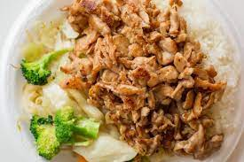

Chicken Teppanyaki

Description
Inspired by B cafe in Quincy, MA, this dish makes for a relatively inexpensive and somewhat simple option to experience the Asian cuisine.
Ingredients
- Sesame teriyaki wok sauce
- Boneless skinless chicken
- Rice
- Boolean cube
- Corn starch
- Onion powder
- Garlic powder
- Salt
- Lemon juice
Recipe
- 1 cup of rice is good for 2 people
- Rice:water - 1:2 ratio
- 1 Boolean cube in rice
- Lid on
- Medium high to boil
- Then almost all the way low for 15-20mins (no moisture - no slide)
- Then pull off the heat and let sit for another little bit
- Separate chicken thighs
- Pat chicken dry
- Cut the fat off
- Cut chicken into strips
- Spread out chicken
- Layer of salt, onion powder, garlic
- Good amount of corn starch (everything should be coated)
- Olive oil on pan - put high heat right away
- Wait til pan hot (want chicken to sizzle immediately)
- Place chicken on pan (should sizzle)
- Put heat down to medium high
- Wait for crispy look to flip them all (golden brown color) - take them all out
- Remove most of the oil
- Turn heat down to low
- Quarter bottle of teriyaki sauce
- Cap full of lemon juice
- Mix
- Put in all the chicken
- Toss it around in the pan
- Butter, salt, and fluff the rice
- Table spoon or two of butter
- Teaspoon of salt
- Fluff